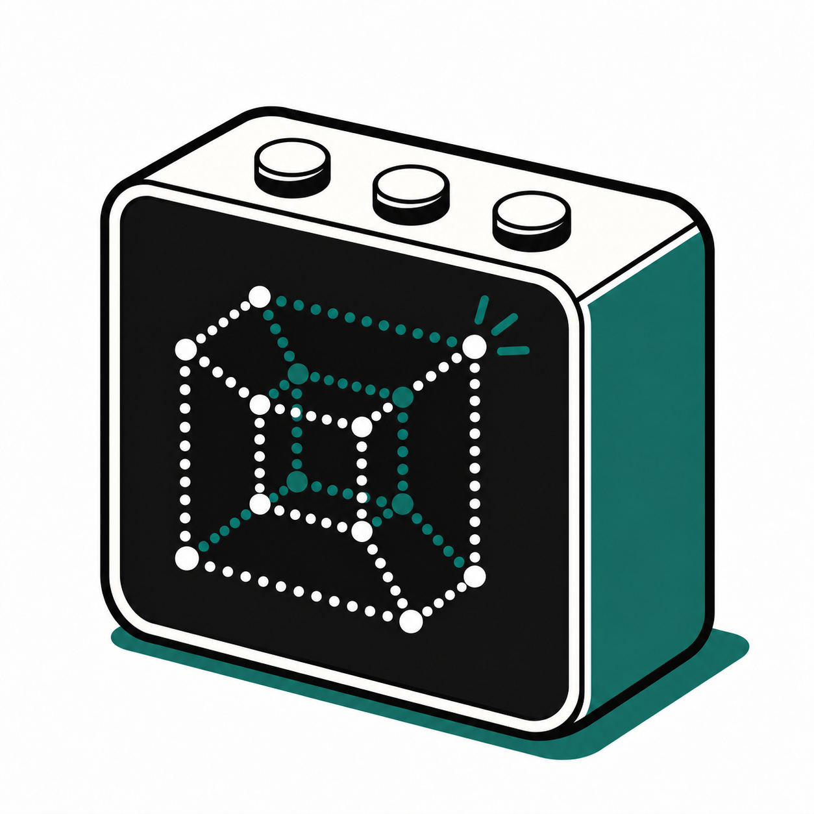

Quick start · Tess
KUBIK
Set up your agent.
Connect. Start talking.

Have USB-C power, a phone and your 2.4 GHz Wi-Fi password ready. Choose your agent on page 3.
Open the setup guide on GitHub
https://OWNER.github.io/kubik/
https://OWNER.github.io/kubik/
Temporary address — replace before release.